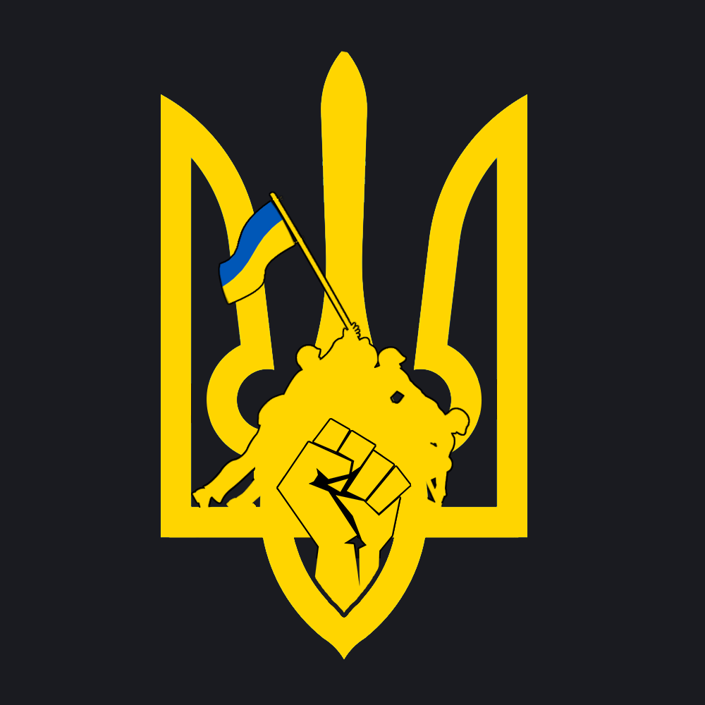

{{ site.description }}

Welcome to our web page! We are the Anonymous Creators, part of The Anonymous that creates, not hacks
Dec'23/Jan'24
Here is our first product. We hope there will be more of them.
We are trying to make a crypto currency that will provide a constant support for Ukraine by giving them 2% of all transfered coins and also enables instant, private payments to anyone, anywhere in the world. StandUpForUkraineToken uses peer-to-peer technology to operate with no central authority: managing transactions and issuing money are carried out collectively by the network. StandUpForUkraineToken Core is the name of the open source software which enables the use of this currency. No matter from which part of world you are from, above the borders. We are trying to establish contact with Ukrainian Gouvernment.
In the time of ongoing tragic war in the Ukraine, a group of people decided to create the StandUpForUkraineToken, a Token (which is a cryptocurrency) with very easy idea. 2% of the amount from each transaction goes to the special wallet on metamask:
0xea1fDC0223005f1e6ee8862cC1Bb7bD2c50867FB
This money are being given to the Ukrainian Gouvernment to makes sure they can fight against Russian Federation and resist against occupation. 1 000 000 Tokens is droped each month from our wallet and transfered to the DEX's or to the Ukrainian Wallet. Depends on ongoing situation.
Token is available on both, Ethereum Chain and Solana chain thanks to bridge technology!
Greetings, citizens of the world. We are Anonymous Creators.
We are The Anonymous Creators.
We are Anonymous. We are Legion. We do not forgive. We do not forget. Expect us.
We are the voice of the voiceless
In the shadow of the widely known group of hackers, known as 'Anonymous,' there exists another mysterious organization that operates in complete anonymity but with an entirely different purpose. These are not hackers but 'Anonymous Creators' – a group of individuals whose desire to change the world directs them towards art, activism, and the creation of content with the potential to transform society. We do the non-profit projects that might help the world and make it better place to live. Our first idea is StandUpForUkraineToken. New part of The Anonymous which is focused on making projects and products that are helping voiceless in the world rather than hacking bad people (what we support too). Organization is non-profit, established on 24th of November 2023.